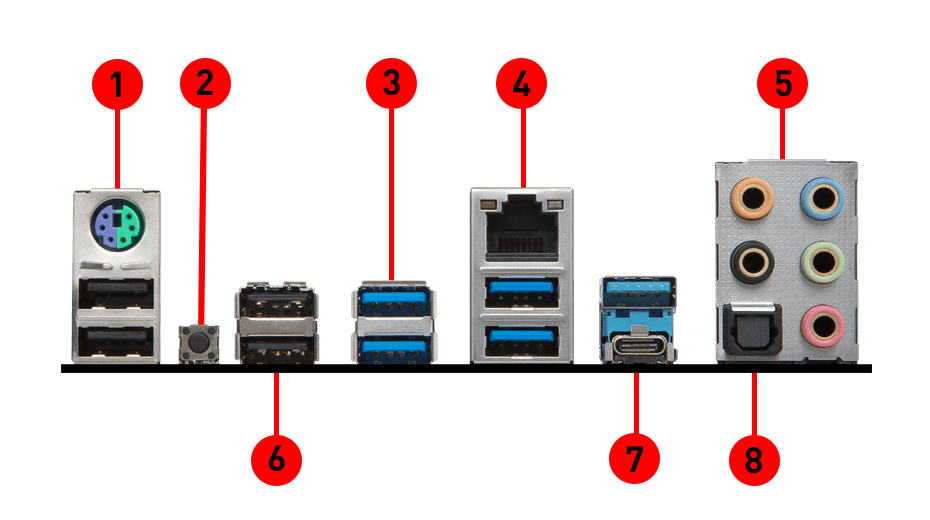
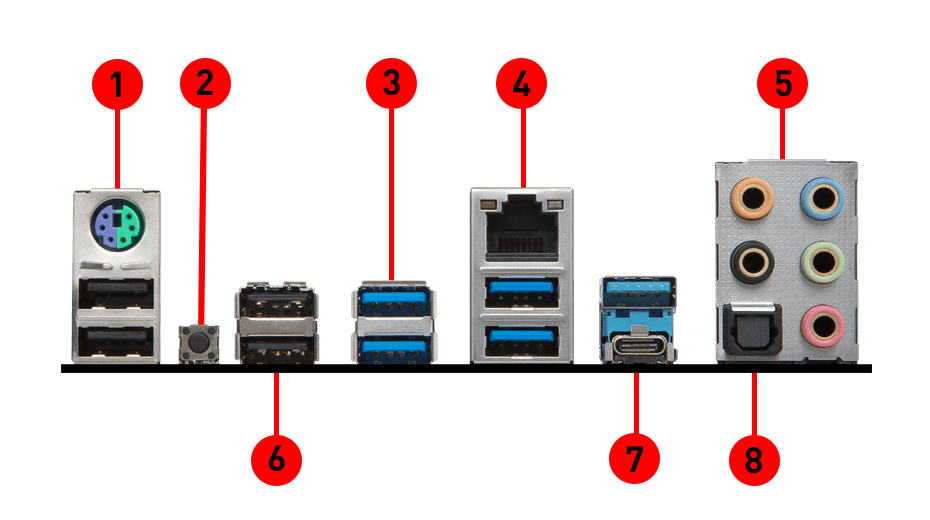

Los conectores externos de una placa base se utilizan para conectar diversos tipos de periféricos y dispositivos a un PC. Estos conectores se encuentran en la parte posterior de la placa base y se les suelen conocer con el nombre de puerto. Algunos de los conectores externos más comunes son: VGA (L): conector de pantalla de 15 clavijas de 3 filas que proporciona salida de vídeo analógica a un monitor. 1 Fibra. 1 HDMI. 1 DVI (K). 1 S-Video. 1 PS/2 (A) (B). 2 USB 3.0: se diferencian de los USB 2.0 y 1.1 en que son de color azul.